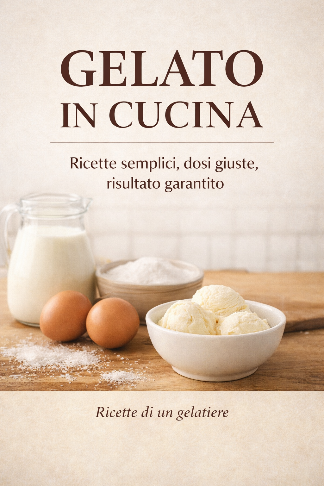

Ingredienti
Selezione attenta e ricette pulite. Meno “effetti speciali”, più sostanza.
Gelato artigianale • ingredienti selezionati • metodo
Nimue nasce dal laboratorio: attenzione ai dettagli, alla materia prima e al bilanciamento. Tradizione artigiana, con uno sguardo moderno.
Un gelato buono non è “dolce e basta”. È equilibrio: acqua, zuccheri, grassi, solidi. È texture, pulizia in bocca e gusto vero.
Selezione attenta e ricette pulite. Meno “effetti speciali”, più sostanza.
Controllo di solidi e zuccheri per evitare ghiaccio, eccesso di dolcezza, instabilità.
I gusti seguono il periodo: frutta quando è buona, creme quando serve comfort.
Una selezione che cambia con la stagionalità e con quello che troviamo di davvero buono. Aggiornato:
Al momento la gelateria è aperta il Sabato, Domenica e festivi. Prima dell'apertura, ore 15:00, ci sarà la lista aggiornata.
Metodo, ordine, temperature, maturazione, mantecazione: sono dettagli invisibili, ma fanno la differenza tra un gelato “ok” e un gelato memorabile.
Nimue nasce da oltre vent’anni di lavoro reale in laboratorio. Un percorso costruito su produzione quotidiana, studio degli ingredienti e attenzione costante al bilanciamento del gelato. L’obiettivo è sempre lo stesso: un gelato artigianale pulito, equilibrato e coerente, senza compromessi.
Un ponte tra artigianalità e digitale: l’app ti aiuta a costruire ricette più bilanciate, con tabelle ingredienti e profili/metodi.
Inserisci i dati, confronta le soluzioni, scegli quella più adatta.
Metodo chiaro, risultati coerenti.
Il metodo del gelato artigianale spiegato con chiarezza.
Un manuale pratico per ottenere risultati puliti, bilanciati e ripetibili, anche a casa.

Un manuale pratico: basi, bilanciamento, metodo e ricette pensate con logica professionale. Ideale per appassionati e per chi vuole risultati più puliti e stabili.
Formato digitale – accesso immediato tramite Amazon
Gelateria Nimue, piazza Maria Leone, 03047 San Giorgio a Liri (FR)
Orari
Sabato, Domenica e festivi dalle 15:00 alle 22:00